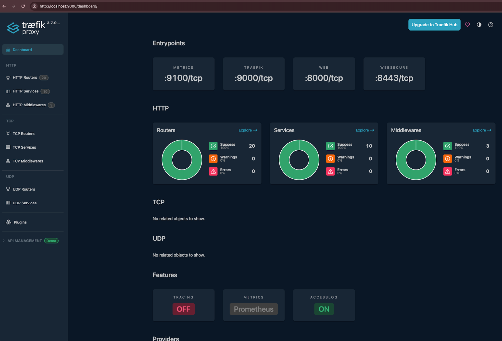

Deploy core Kubernetes services
This page covers how to deploy the core services that must be running in your Kubernetes cluster before you deploy the NBS 7 microservices: the Traefik ingress controller, cert-manager, and the Cluster Autoscaler. Complete the sections on this page in order, then continue to Deploy and configure Keycloak, which is also a core service.
The
kubectlcommands on this page require the cluster connection you configured in Connect to Kubernetes cluster.
On this page
- Get the NEDSS-Helm charts
- Deploy Traefik ingress controller
- Configure cert-manager (optional)
- Deploy Cluster Autoscaler (AWS only)
- Next steps
Get the NEDSS-Helm charts
Complete these steps to download the Helm charts that deploy the core services and the NBS 7 microservices:
- Go to the NEDSS-Helm v7.13.0 release page. Under Assets, download the
nbs-helm-v7.13.0.zipfile. - Unzip the downloaded file.
-
In a terminal, change into the
chartsdirectory from the unzipped file:cd <HELM_DIR>/nbs-helm-v7.13.0/charts
Run all helm commands on this page from this charts directory.
Deploy Traefik ingress controller
The Traefik Helm chart in the NEDSS-Helm repository sets up Prometheus metrics, configures Linkerd sidecar injection for the traefik Kubernetes deployment, sets timeouts, and instructs the Traefik controller to create a Network Load Balancer (NLB) in AWS or an internal load balancer in Azure. This section covers how to deploy the Traefik controller, deploy the NBS ingress resources, and create the DNS records that route traffic to them.
Deploy the Traefik controller
- In the
traefikchart directory, open the values file for your cloud provider:- AWS:
traefik/values.yaml - Azure:
traefik/values-azure.yaml
- AWS:
-
Confirm that the
deploymentsection of that file contains the following pod annotation:podAnnotations: linkerd.io/inject: enabled -
Optional: To make the
kubectl logscommand return more information if you encounter issues, changeINFOtoDEBUGin the following snippet in that file:logs: general: level: INFO -
Add the Traefik Helm chart repository and update it:
helm repo add traefik https://traefik.github.io/charts helm repo update - Deploy the Traefik controller to your Kubernetes cluster with the command for your cloud provider:
-
AWS:
helm install traefik traefik/traefik --namespace traefik --create-namespace -f ./traefik/values.yaml -
Azure:
helm install traefik traefik/traefik --namespace traefik --create-namespace -f ./traefik/values-azure.yaml
If your AKS cluster has Windows node pools, for example for NBS 6, append the following option to the Azure command so that Traefik is scheduled on a Linux node:
--set nodeSelector."kubernetes\.io/os"=linux -
-
Wait for the deployment to complete: Run the following command and verify that it prints that the deployment was successfully rolled out:
$ kubectl rollout status deployment/traefik -n traefik deployment "traefik" successfully rolled out -
Confirm the Traefik pod is healthy: Run the following command and verify that the pod has a
STATUSofRunningand that the two numbers in theREADYcolumn match:$ kubectl get pods -n traefik NAME READY STATUS RESTARTS AGE traefik-<POD-TEMPLATE-HASH>-<RANDOM-STRING> 2/2 Running 0 5m -
Get the Traefik load balancer address: Run the following command and confirm that ports 80 and 443 are listed under the
PORT(S)column. The example output is from AWS:$ kubectl get svc -n traefik NAME TYPE CLUSTER-IP EXTERNAL-IP PORT(S) AGE traefik LoadBalancer 172.xx.xxx.xxx [HASH]-[RANDOM-ID].elb.[YOUR-REGION].amazonaws.com 80:[NODEPORT1]/TCP,443:[NODEPORT1]/TCP 6m
Each instance of
[HASH]-[RANDOM-ID].elb.[YOUR-REGION].amazonaws.comon this page refers to the same value: the address of your Traefik load balancer. For AWS, this is an NLB hostname. For Azure, this is an IP address.
Deploy NBS ingress resources
The nbs-ingress Helm chart manages all ingress routing between the NBS 7 applications deployed to your Kubernetes cluster. Complete these steps to deploy it:
- In the
nbs-ingress/values.yamlfile (the same file is used for AWS and Azure), search forEXAMPLEand fill in your environment-specific values. The Helm values reference for NBS 7 microservices lists the values to use. -
Deploy the ingress resources to your Kubernetes cluster:
helm install nbs-ingress ./nbs-ingress -n default -f ./nbs-ingress/values.yaml -
Verify that the ingress resources were created. If you use PowerShell, replace
grep -EwithSelect-String. The example output is from AWS:$ kubectl get ingress -A | grep -E "NAME|traefik" NAMESPACE NAME CLASS HOSTS ADDRESS PORTS AGE default nbs-ingress-dataingestion traefik <YOUR-DATA-HOSTNAME> [HASH]-[RANDOM-ID].elb.[YOUR-REGION].amazonaws.com 80, 443 5m default nbs-ingress-main traefik <YOUR-APP-HOSTNAME> [HASH]-[RANDOM-ID].elb.[YOUR-REGION].amazonaws.com 80, 443 5m
Create DNS records
Create A records in your Domain Name System (DNS) service, such as Amazon Route 53 or Azure DNS, that point to the address of the Traefik load balancer:
- Retrieve the load balancer address: The
kubectl get svc -n traefikcommand in Deploy the Traefik controller printed the address of the Traefik load balancer under theEXTERNAL-IPcolumn. Rerun that command if you need to retrieve the address again. -
Create the records: Create an A record for each hostname in the following table. Replace
<DOMAIN_NAME.TLD>with your site and domain names from the Helm values reference for NBS 7 microservices:Subdomain description Hostname Example NBS application app.<DOMAIN_NAME.TLD>app.nbsdemo.comData services data.<DOMAIN_NAME.TLD>data.nbsdemo.comNiFi (use with caution) nifi.<DOMAIN_NAME.TLD>nifi.nbsdemo.comNiFi has known security vulnerabilities. Add a NiFi DNS record only if you need to administer NiFi directly. Otherwise, omit it.
To create the records in your cloud provider:
- AWS: In the AWS Management Console, go to Route 53 > Hosted Zones and select your hosted zone. Make note of your Hosted zone ID, because the verification step uses it. Create or edit each A record from the table so that its Route traffic to target is the hostname of your Traefik load balancer.
- Azure: In the Azure Portal, go to DNS Zones and select your DNS zone. Create or edit each A record from the table so that it points to the IP address of your Traefik load balancer.
-
Verify the records: For each record you created, run the following
nslookupcommand and verify that it does not print an error such asserver can't find. Records typically propagate within 60 seconds. If you encounter an error, rerun the command periodically for up to 5 minutes until it prints no error:nslookup app.<DOMAIN_NAME.TLD>For Azure, verify that the command prints the IP address of your Traefik load balancer.
For AWS, the
nslookupcommand prints other IP addresses, so run the following command instead to verify the record target. Fill in your values in the strings surrounded by angle brackets, and verify that the output is the hostname of your Traefik load balancer:$ aws route53 list-resource-record-sets \ --hosted-zone-id <YOUR_AWS_ROUTE53_HOSTED_ZONE_ID> \ --query "ResourceRecordSets[?Name=='app.<DOMAIN_NAME.TLD>.'].AliasTarget.DNSName" \ --output text [HASH]-[RANDOM-ID].elb.[YOUR-REGION].amazonaws.com
Troubleshoot Traefik
If you encounter issues when you deploy or verify Traefik, the following sections provide suggestions.
Access the Traefik dashboard
The Traefik dashboard lets you inspect routers, services, and middleware:
-
Run the following command, which creates a secure, temporary network tunnel between your local machine and the
traefikpod in your Kubernetes cluster. Leave the command running:$ kubectl port-forward -n traefik deployment/traefik 9000:9000 Forwarding from 127.0.0.1:9000 -> 9000 Forwarding from [::1]:9000 -> 9000 -
Go to
http://localhost:9000/dashboard/in your browser to access the Traefik dashboard. The following screenshot shows the dashboard:
-
When you finish using the dashboard, press Ctrl+C in the terminal that is running the port-forward command to stop the tunnel.
View Traefik logs
To print the most recent Traefik log entries, run the following command:
kubectl logs -n traefik deployment/traefik -c traefik --tail=100
Common Traefik issue
-
502 Bad Gateway: Run the following command and confirm that ports 8443 and 8000 are listed under the
ENDPOINTScolumn:$ kubectl get endpoints -n traefik NAME ENDPOINTS AGE traefik [POD-IP-ADDRESS]:8443,[POD-IP-ADDRESS]:8000 10m
Get support
If issues persist after you complete the troubleshooting steps, email nbs@cdc.gov.
Configure cert-manager (optional)
cert-manager is a core service that Terraform deploys when you provision your cloud environment. It creates Transport Layer Security (TLS) certificates for workloads in your cluster and renews the certificates before they expire. By default, cert-manager uses Let’s Encrypt as the certificate authority for the NiFi and modernization-api services.
If you have manual certificates, skip steps 1 - 4 and store your certificates in Kubernetes secrets instead. For more information, see the Kubernetes Secrets documentation.
-
Locate the cluster issuer manifest at
k8-manifests/cluster-issuer-prod.yamlin the NEDSS-Helm repository. -
In
cluster-issuer-prod.yaml, update the email address to a valid operations address. Let’s Encrypt uses this address to notify you of upcoming certificate expirations if automatic renewal stops working. -
Apply the manifest:
cd <HELM_DIR>/k8-manifests kubectl apply -f cluster-issuer-prod.yaml -
Verify that the cluster issuer is deployed and in a ready state. You should see
letsencrypt-productionwith aREADYstatus ofTrue:kubectl get clusterissuer
Deploy Cluster Autoscaler (AWS only)
The Cluster Autoscaler is a Helm chart that horizontally scales cluster nodes as needed.
AKS clusters usually include a built-in cluster autoscaler, so this section applies to AWS only.
-
Update the following values in
charts/cluster-autoscaler/values.yamlwith values from the AWS console:clusterName: <EXAMPLE_EKS_CLUSTER_NAME> autoscalingGroups: - name: <EXAMPLE_AWS_AUTOSCALING_GROUP_NAME> maxSize: 5 minSize: 3 awsRegion: <YOUR_AWS_REGION> -
Install the chart:
helm repo add autoscaler https://kubernetes.github.io/autoscaler helm upgrade --install cluster-autoscaler autoscaler/cluster-autoscaler \ -f ./cluster-autoscaler/values.yaml \ --namespace kube-system -
Verify that the Cluster Autoscaler pod is running:
kubectl --namespace=kube-system get pods | grep cluster-autoscaler
Next steps
Continue to Deploy and configure Keycloak.